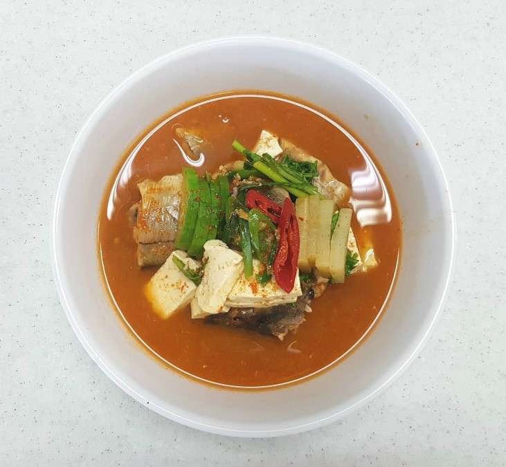

10. 생선찌개

*재료
동태 1마리(300g)정도, 무 30g, 애호박 30g, 두부 50g, 풋고추 1개(길이 5cm 이상), 홍고추 1개, 쑥갓 10g, 깐 마늘 2쪽(중), 생강 10g, 실파 2뿌리, 고추장 30g, 소금 10g, 고춧가루 10g
*요구사항
1. 생선은 4~5cm 정도의 토막으로 자르시오.(생선의 크기에 따라 길이를 가감할 수 있다.)
2. 무, 두부의 완성된 크기는 2.5cm x 3.5cm x0.8cm 정도로 일정하게 만드시오.
3. 호박은 주어진 크기에 따라 0.5cm 두께의 반달형 또는 은행잎모양으로 썰고 쑥갓과 파는 4cm 길이로 만드시오.
4. 고추는 통 어슷썰기 하시오.
5. 고추장, 고춧가루를 사용하여 만드시오.
*조리 과정
1. 생선은 비늘을 긁고 지느러미는 떼어 잘 씻은 후 4~5cm 길이로 토막을 낸다. 먹을 수 있는 내장부분은 골라 두고 내장이 있던 부위의 검은 막은 제거한다.
2. 마늘, 생강은 다진다.
3. 무, 두부는 2.5cm x 3.5cm x 0.8cm 크기로 썬다.
4. 호박은 0.5cm 두께의 반달형 또는 은행잎 모양으로 썬다.
5. 풋고추, 홍고추는 어슷하게 썰어 씨를 제거한다.
6. 쑥갓과 실파는 4cm 길이로 썬다.
7. 냄비에 물을 넣고 끓이다가 고추장을 풀고 무를 넣는다.
8. 무가 반쯤 익으면 생선, 호박, 고춧가루를 순서대로 넣고 다시 끓어 오르면 조금 두었다가 거품을 걷어낸다.
9. 8번의 과정에 두부, 홍고추, 마늘, 생강을 넣는다.
10. 생선 맛이 잘 우러나면 소금, 풋고추, 쑥갓과 실파를 넣어 불을 끄고 완성그릇에 담아낸다.
*유의사항
생선 손질하기
1. 생선의 비늘을 칼로 꼬리에서 머리쪽으로 긁어낸다.
2. 생선의 먹는 부분(알, 이리 등)과 버리는 부분(쓸개)을 골라 깨끗하게 준비한다.(단, 시험장에서 구분이 잘 안가면 알만 제외하고 버려도 상관없다.
3. 생선의 머리부분을 사용할 경우 주둥이를 약간 잘라내고 아가미도 제거한다